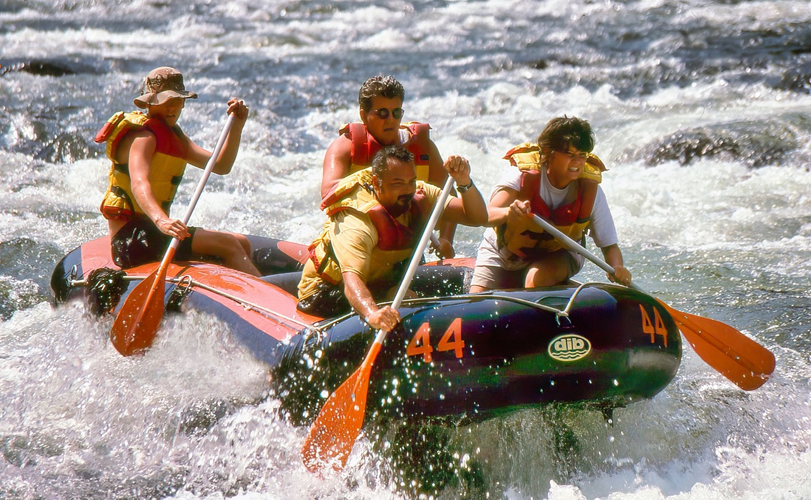

Navigate untamed waters and get your blood rushing through back country rapids!
Navigate untamed waters and get your blood rushing through back country rapids!
White Water Rafting Excursions was created in 1997. It began as a side hobby during the Rift family's off time and over the past few decades, has become a major company throughout the midwest. The company began with one raft, that
could only seat about four individuals comfortably. This raft was welded by Ron Rift, the 19 year old college engineer. Ron took over the company from his father, Rich, in 2007 and has grown the company ever since.